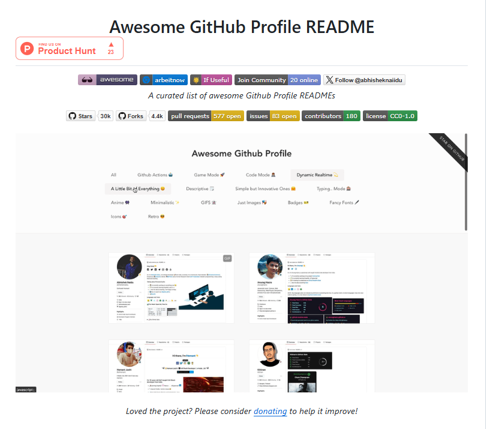

GitHub
Organiza, comparte y colabora — todo desde el navegador
junio 2026
Objetivos

- Conocer GitHub: Qué es y por qué usarlo en contexto académico.
- Repositorios: Crear, organizar y compartir proyectos desde la web.
- README y Markdown: Documentar tu trabajo de forma clara y profesional.
- Perfil GitHub: Construir un portafolio visible para el mundo.
¿Qué es GitHub?

- ¿Qué es GitHub?
- Plataforma web para alojar, versionar y compartir proyectos de forma colaborativa.
- ¿Por qué usarlo en eduación?
- Organiza apuntes, tareas y proyectos en un solo lugar.
- Permite compartir materiales con estudiantes y colegas.
- Deja registro de cada cambio y versión de tu trabajo.
- Organiza apuntes, tareas y proyectos en un solo lugar.
Crear una cuenta

- Paso a paso:
- Ve a github.com y haz clic en Sign up.
- Ingresa tu correo, crea una contraseña y elige un nombre de usuario.
- Verifica tu cuenta y completa el perfil básico.
- Consejos:
- Usa un nombre de usuario profesional (ej:
francisco-alfaro). - Agrega foto de perfil y una bio breve.
- Usa un nombre de usuario profesional (ej:
🌿 Con una cuenta gratuita tienes acceso a repositorios públicos y privados ilimitados.
Paso a paso


Ejemplos de Readme


🔗 Para más ejemplos de README, visita awesome-readme.
GitHub Profile

- ¿Qué es?
- Tu página pública en GitHub: muestra quién eres y qué has hecho.
- ¿Por qué importa?
- Funciona como un portafolio académico y profesional.
- Es lo primero que ven empleadores, colegas y estudiantes.
- Refleja tu actividad, proyectos y áreas de interés.
- Funciona como un portafolio académico y profesional.
🌿 Crear un perfil atractivo es más fácil de lo que parece — y marca la diferencia.
Cómo crear tu perfil especial
- Crea un repositorio con el mismo nombre que tu usuario (ej:
fralfaro/fralfaro). - GitHub lo reconoce automáticamente como tu perfil README.
- Edita el
README.mdcon tu presentación personal. - ¡Se muestra en la portada de tu perfil para todo el mundo!
🌿 Es un repositorio especial — cuando el nombre coincide con tu usuario, GitHub lo usa como tu página de perfil.
Ejemplos de Profile


🔗 Para más ejemplos de PROFILE, visita awesome-profile.
Actividad: Tu Repositorio en GitHub

- Crea tu cuenta en github.com (si aún no tienes).
- Crea un repositorio llamado
mi-curso-herramientas. - Agrega un
README.mdusando la estructura de syllabus vista en clase. - Incluye: título, descripción, tabla de contenidos y al menos un link.
- (Extra) Crea tu repositorio de perfil con tu nombre de usuario.
⏱️ Tiempo de la actividad: 15–20 minutos.